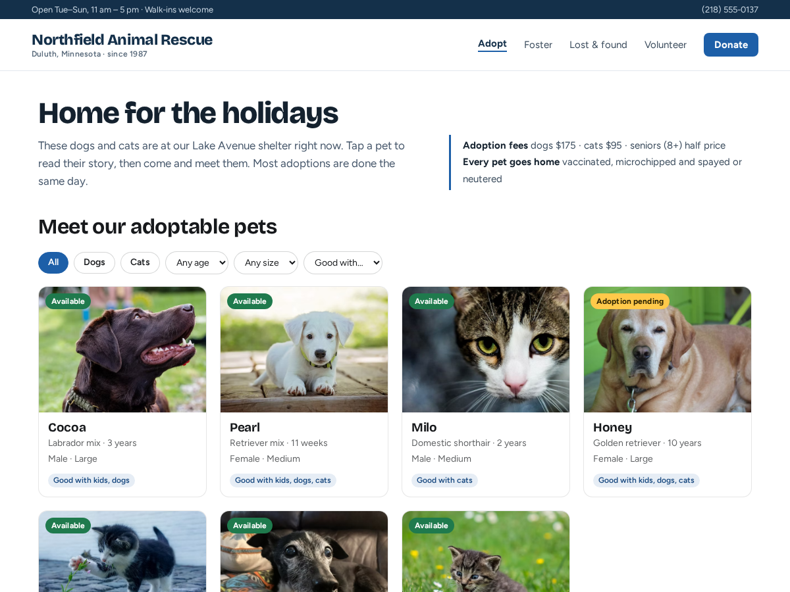

Pet Adoption
Show your adoptable pets and take applications
- Photo cards with Available and Pending ribbons
- A page per pet: photos, story, health notes
- Apply button to your own form page or email
- Filters by species, age and size (Premium)
- Application form that adds a contact (Premium)

What it does
Pet Adoption puts your adoptable dogs, cats and other animals on your site as a grid of photo cards. Each card shows the pet's name, breed, age, sex and size, who they get on with, and a ribbon: Available, Adoption pending or Adopted. A tap opens the pet's own page with more photos, their story, health notes and an Apply to adopt button.
You keep the list in the dashboard. Add a pet with photos from your media library, change a status in two clicks, and move pets up or down to set the order on your site. Adopted pets leave the grid on their own. A new site starts with a few sample pets, so the widget looks finished the moment you add it; replace them with yours.
The free plan shows up to 12 pets with ribbons and pet pages, and the Apply button opens your own form page or email. Premium shows every pet and adds filters by species, age, size and good with kids, dogs or cats. It also adds a built-in application form that saves each application and files the applicant in your contacts with a label, so an automation can email you. Premium also brings a Happy tails strip of recent adoptions, a Pet of the week layout, a sponsor bar per pet from a donations campaign, and CSV import.
Price
Free
- Up to 12 pets on your site
- Ribbons and a page for each pet
- Apply button to your own form page
- Small credit link
Premium
$5/month, yearly $4/month (20% off)
- Unlimited pets, filters and Happy tails
- Application form with a contact label
- Pet of the week, sponsor bars, CSV import
- Remove the credit link